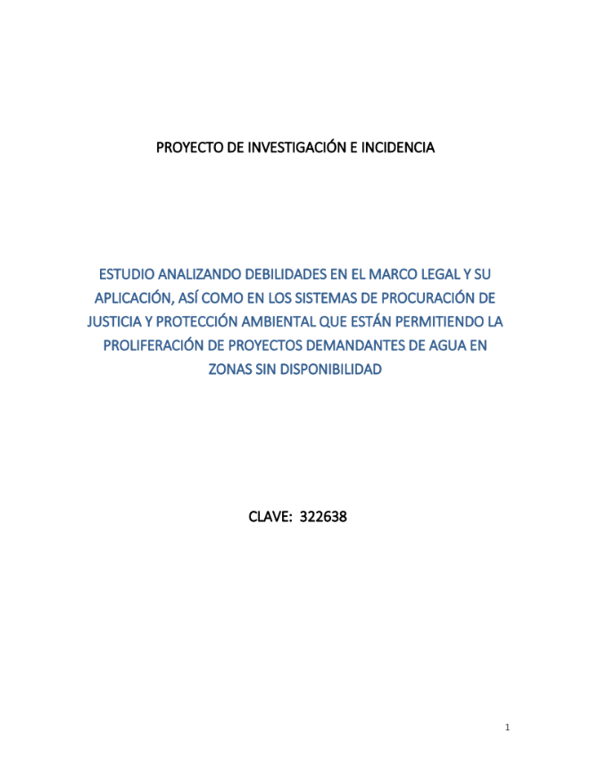
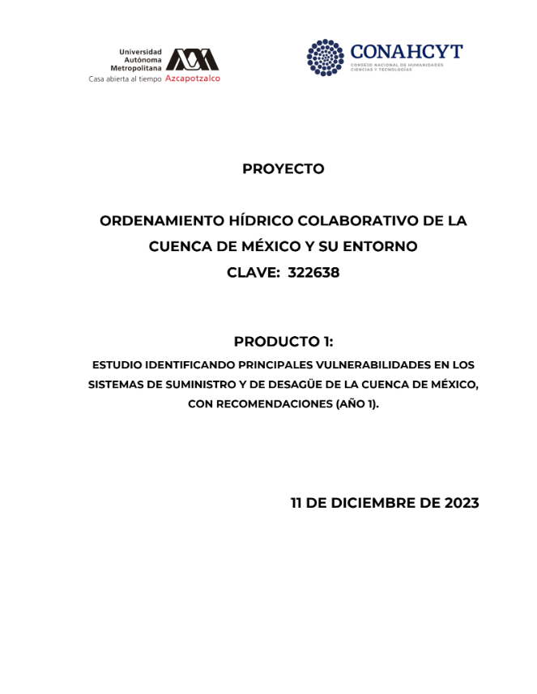
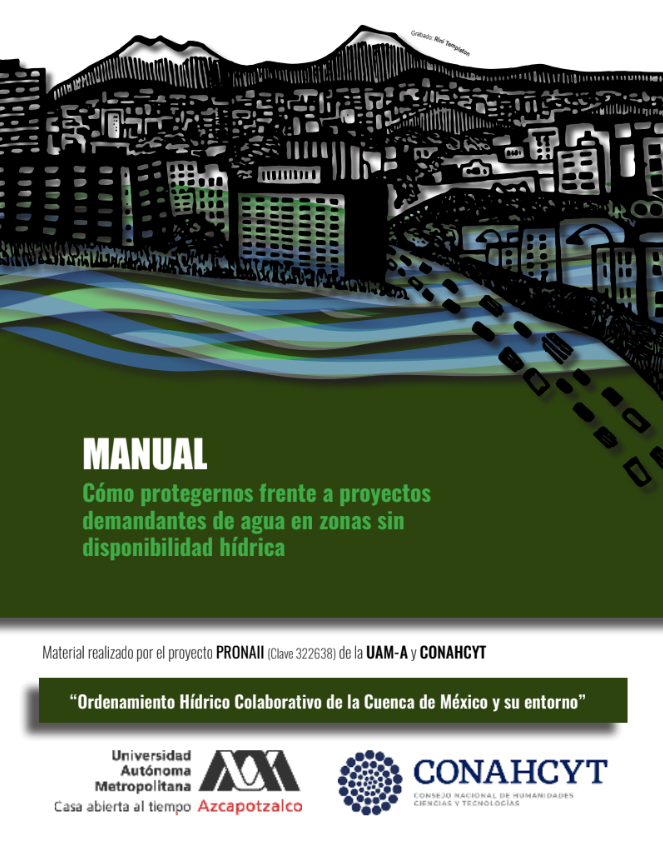

Estudio analizando debilidades en el marco legal y su aplicación, así como en los sistemas de procuración de justicia y protección ambiental que están permitiendo la proliferación de proyectos demandantes de agua en zonas sin disponibilidad

Estudio identificando principales vulnerabilidades en los sistemas de suministro y de desagüe de la cuenca de México, con recomendaciones

Manual: Cómo protegernos frente a proyectos demandantes de agua en zonas sin disponibilidad hídrica